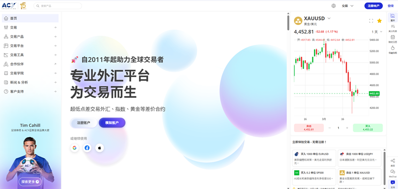
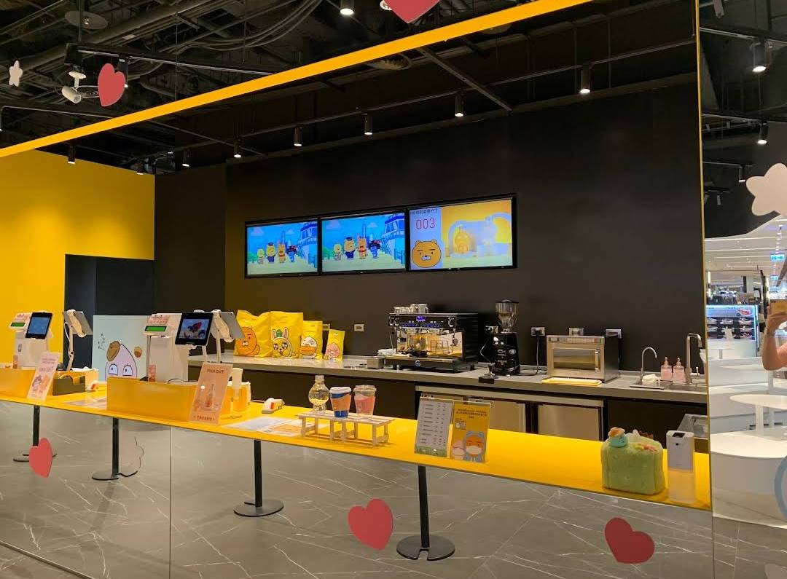
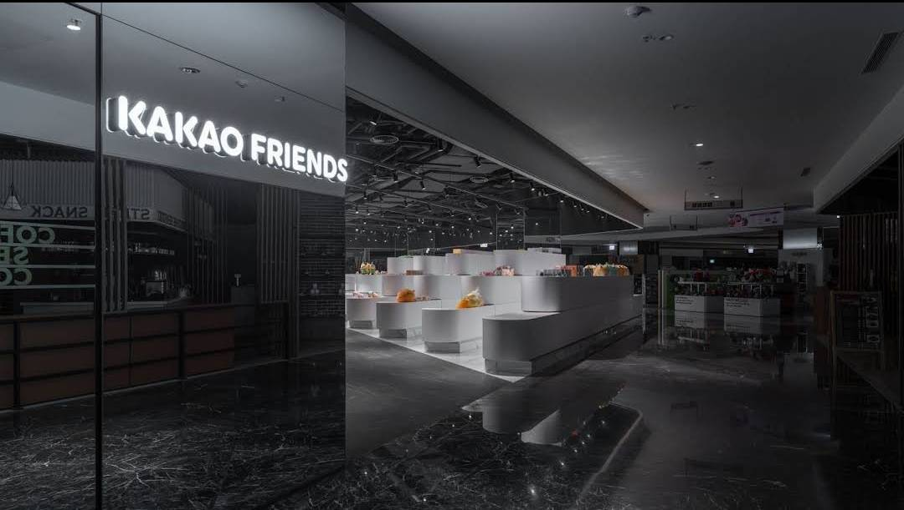
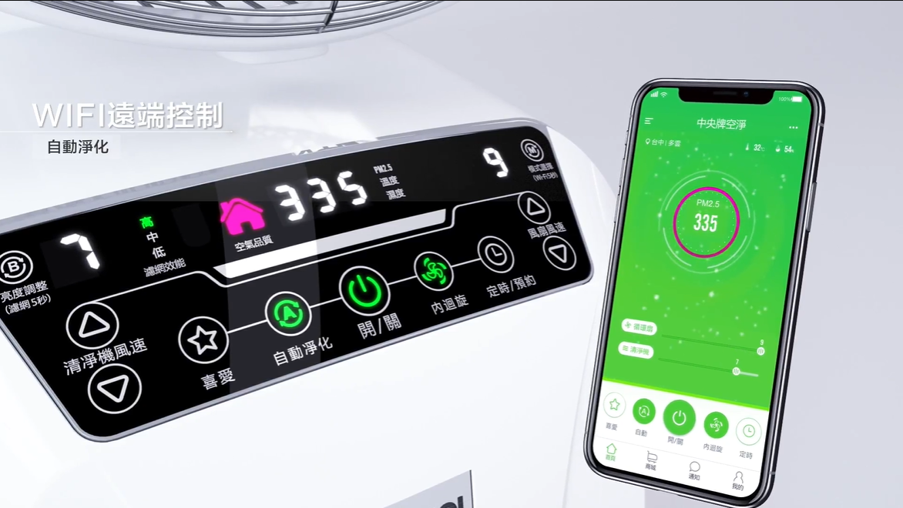

交易與金融科技
維運 MT4/MT5 與自有交易平台，持續降低出入金成本並提升處理效率。
以穩定營運為核心，持續優化交易系統流程與成本結構。
I'm
整合產品、系統與營運，把策略落地為可量化的商業成果。
我是吳新捷，是一個跟你沒有心結的產品經理
九年PM經歷，目前在澳洲卷商擔任產品經理。 曾經參與多個新創工作，並在中國和柬埔寨有創業的經驗。 曾將產品賣入淘寶、天貓、好市多、MOMO電視購物等經驗。 對於POS和網站還有CRM系統均有非常多的實戰經驗。 本身也是 Prop Firm 交易者，有成功出金多家平台的經驗。對於交易、AI 都很有學習的意願。 對AI 工具熟悉，有執行許多專案和導入的成功案例。
聚焦四大能力面向，持續創造可量化的成果與影響。
維運 MT4/MT5 與自有交易平台，持續降低出入金成本並提升處理效率。
以穩定營運為核心，持續優化交易系統流程與成本結構。
完成 POS、電商、CRM、會員與發票 API 的 OMO 架構整合。
完成零售系統整合與會員遷移，支撐線上線下一致體驗。
管理 20+ 品牌 SEO 專案，導入 AI 內容流程，提升產能與品質。
以可擴展流程持續提升自然流量與詢盤品質。
建立數位獲客機制，將投放與內容策略轉化為可衡量的營收成效。
建立可持續的數位行銷引擎，推動成長與轉換。
依時間序呈現職稱、期間、地點與關鍵成果。
職位：SEO 專案經理
職位：產品經理 / 系統整合 PM
職位：行銷經理 / 成長駭客
職位：IT 經理
職位：產品經理
以背景、問題、角色、解法與成果呈現關鍵案例。

公司同時維運 MT4/MT5 與自有平台，需兼顧金融營運穩定與效率。
手續費偏高、流程分散，客服與營運資訊不一致。
擔任 PM 與技術協調窗口，整合工程、財務、營運、客服與支付供應商。
重整出入金路由、導入 Dify AI 流程，並建立 KPI 導向的產品路線圖治理。
每月節省超過 USD 10K 手續費，並提升營運一致性。

連鎖零售需在短時間完成 POS、電商、CRM、會員與發票的 OMO 串接。
舊 ERP/CRM 移轉複雜，且上線時程壓力高。
擔任技術與商務橋樑，管理新加坡開發團隊與第三方 API 夥伴。
首月完成 POS 與會員移轉，次月完成電商與 API 串接，並同步推進 SEO。
快速完成 OMO 上線與資料移轉，核心關鍵字排名維持領先。

傳統工具機品牌需要強化海外數位獲客能力。
多品牌、多語系 SEO 缺乏整合式成長系統。
擔任 SEO 專案經理，整合內容、技術 SEO、CRM 與利害關係人需求。
建立 SEO 治理機制、AI 短影音流程與 Zoho CRM 線索管理整合。
穩定維運 20+ 專案排名，並提升詢盤品質與轉換效率。

傳統製造商希望推出智慧空氣清淨機，並拓展數位銷售通路。
從 MCU 通訊到 App 上架，跨地軟硬體協作複雜度高。
擔任 PM，負責時程、規格與高雄硬體及深圳軟體團隊溝通。
完成原型定義、Android/iOS 上架、NCC 認證與上市推廣。
產品成功商業化，帶動銷售成長並拓展通路。
兼具商業洞察與技術理解的產品領導能力。
歡迎交流產品管理、平台整合與數位轉型機會。